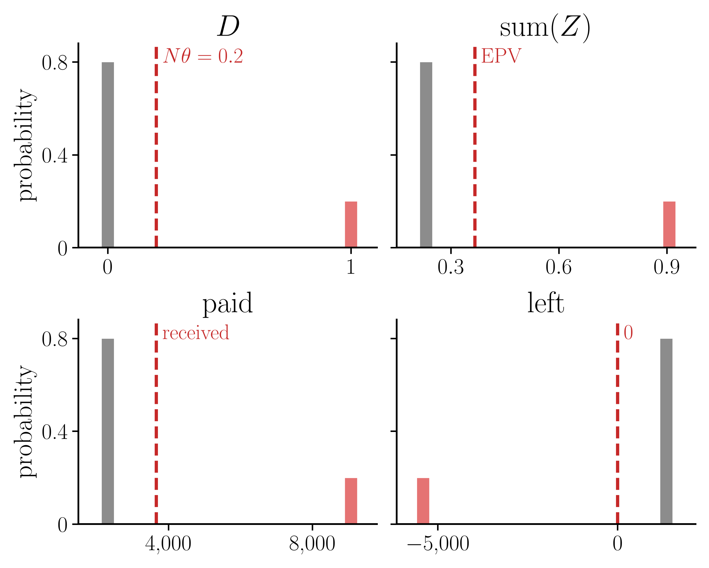
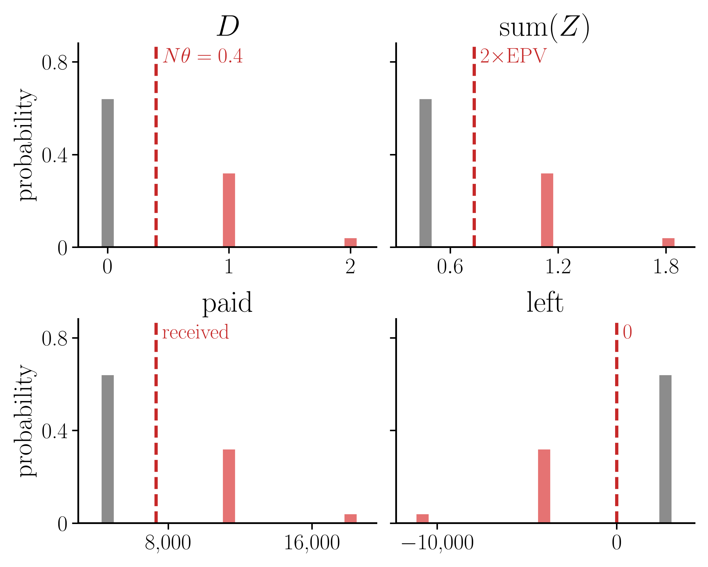
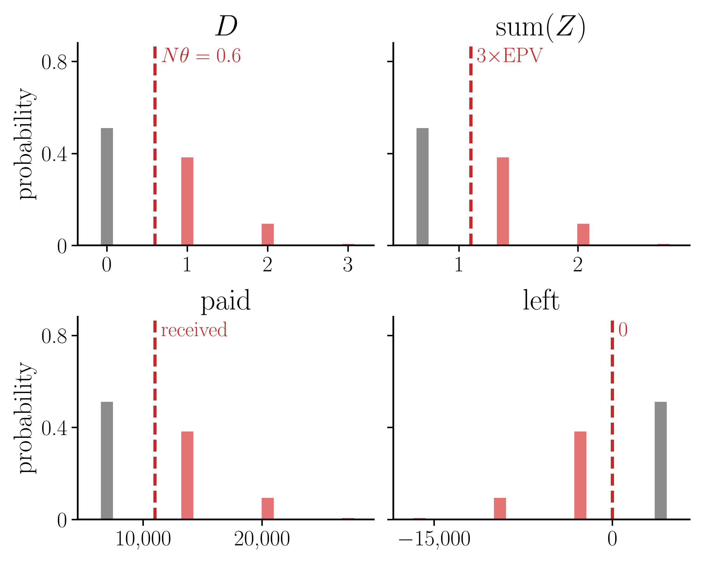
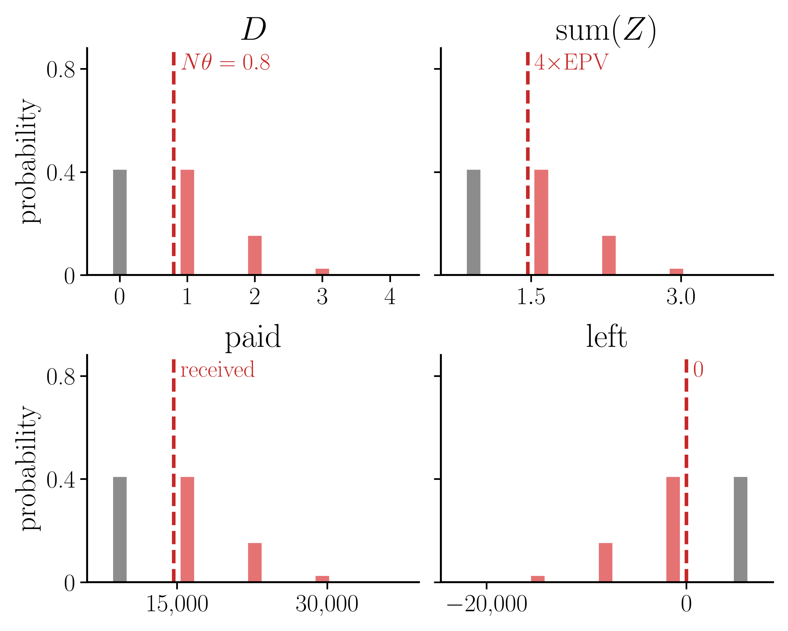
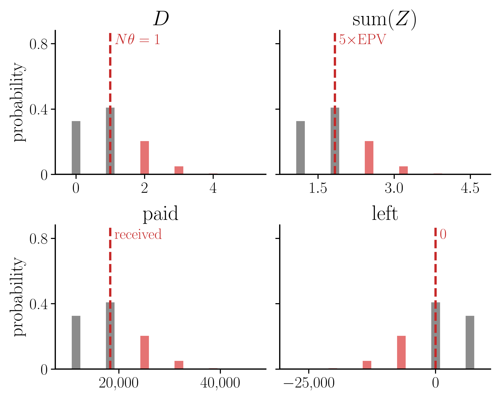
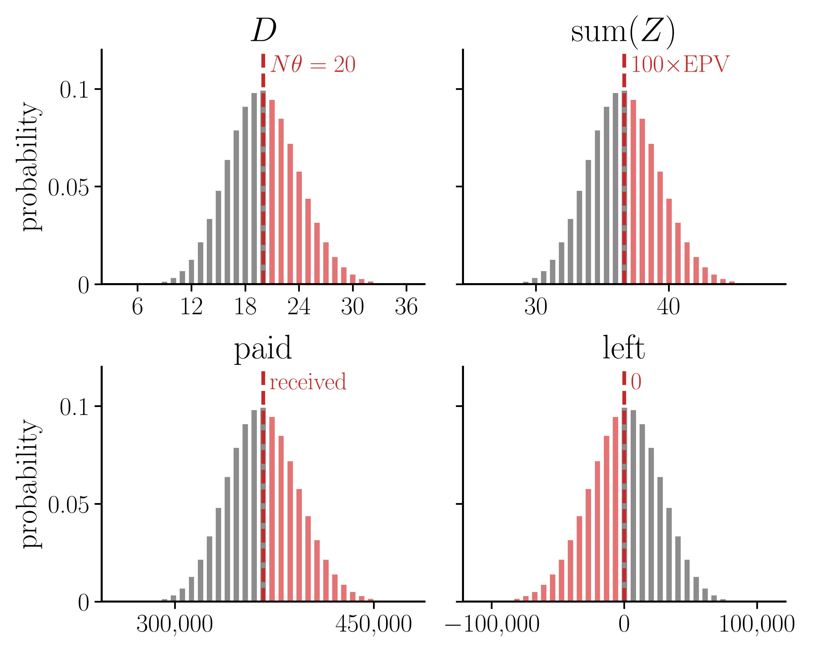
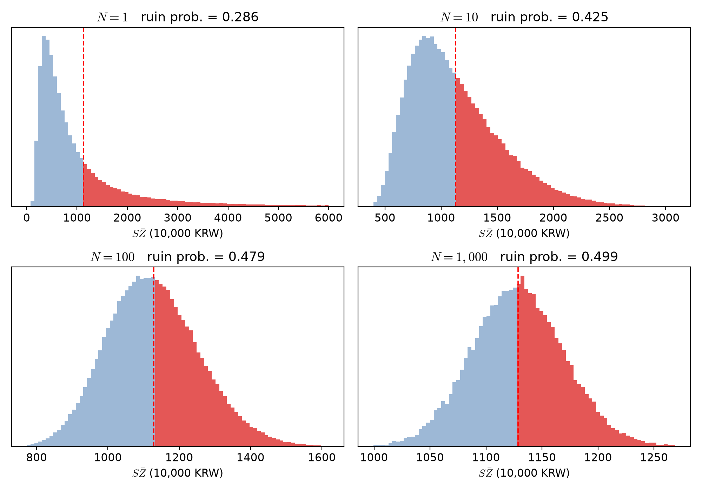
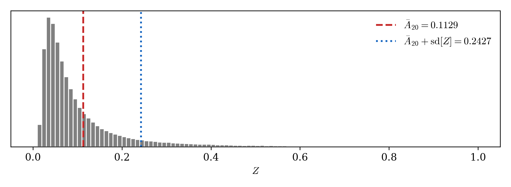
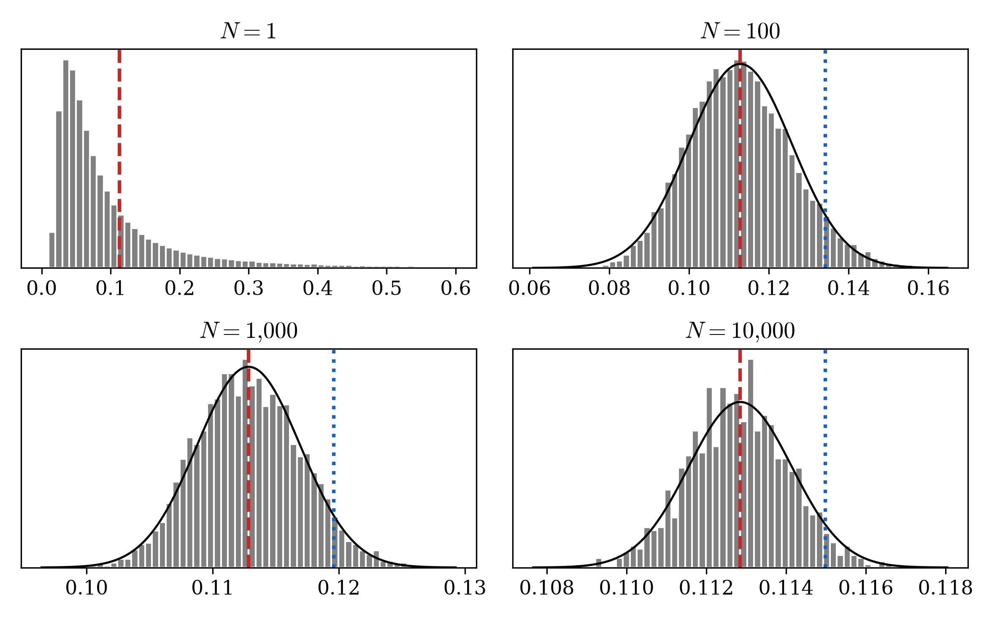
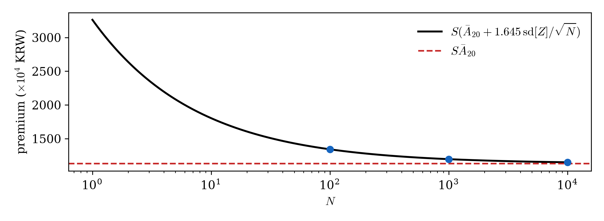

05wk-2: 보험급부 (3)
1. 강의영상
2. 가입자를 한 명만 받은 회사가 망할 확률 (2)
# 예제1 보험금이 \(S = 10^8\) 원(1억)이고 \(i = 0.05\) 다. 보험료로 \(P = 5{,}000\) 만원을 받았다. \(P(1+i)^u = S\) 인 \(u\) 를 구하라.
(풀이) \(u = \log(S/P)/\log(1+i) = \log 2/\log 1.05 = 14.21\) 년. 받은 보험료 \(P\) 가 이자로 불어나 딱 보험금 \(S\) 가 되는 데 걸리는 시간이다.
# 예제2 가입자는 1명이다. 보험료 \(P\) 를 받았고, \(P(1+i)^u = S\) 인 \(u\) 를 잡았다. 옳은 것을 모두 고르라.
- 가입자가 \(u\) 보다 일찍 죽으면 회사는 손해다.
- 가입자가 딱 \(u\) 년을 살고 죽으면 회사는 이득이다.
- 가입자가 \(u\) 보다 오래 살면 회사는 이득이다.
- 가입자가 딱 \(u\) 년을 살고 죽으면 회사는 망하지 않는다.
(풀이) 답은 1, 3, 4. 딱 \(u\) 년이면 불어난 보험료가 딱 \(S\) 라 잔고가 0 이다. 이득도 손해도 아니지만 음수가 아니므로 망하지는 않는다.
# 예제3 보험금 \(S\) 는 그대로다. 아래 1~4 가 일어나면 \(u\) 는 커지는가, 작아지는가?
- 보험료 \(P\) 를 더 많이 받는다.
- 보험료 \(P\) 를 더 적게 받는다.
- 이자율 \(i\) 가 오른다.
- 이자율 \(i\) 가 내린다.
(풀이) 1 은 작아진다, 2 는 커진다, 3 은 작아진다, 4 는 커진다. 받은 돈이 많거나 이자가 크면 \(S\) 까지 빨리 불어난다.
# 예제4 보험금이 1억, 보험료가 5,000만원이다. 이자율이 \(i = 0.05\) 에서 \(i = 0.10\) 으로 오르면 \(u\) 는 몇 년에서 몇 년으로 바뀌는가?
(풀이) \(u = \log 2/\log 1.05 = 14.21\) 년에서 \(u = \log 2/\log 1.10 = 7.27\) 년으로 줄어든다. 이자가 크면 \(P\) 가 \(S\) 까지 빨리 불어난다.
# 예제5 보험금이 1억이고 \(i = 0.05\) 다. \(u = 10\) 년이 되게 하려면 보험료를 얼마 받아야 하는가?
(풀이) \(P = S v^{u} = 10{,}000 \times 1.05^{-10} = 6{,}139\) 만원. 10년 뒤 1억의 지금 값이다.
# 예제6 20세인 사람에게 보험금 1억인 보험을 팔고 보험료 1,128.5만원을 받았다(\(i = 0.05\)). 20세인 사람이 64.72세 전에 죽을 확률은 \(28.56\%\) 다. 회사가 망할 확률은?
- \(5\%\)
- \(28.56\%\)
- \(50\%\)
- \(71.44\%\)
(풀이) 답은 2. \(u = \log(10{,}000/1{,}128.5)/\log 1.05 = 44.72\) 년이므로 가입자가 64.72세 전에 죽으면 망한다. 1,128.5만원은 손익분기점(EPV)인데도 열 번에 세 번꼴로 망한다.
# 예제7 20세인 사람에게 보험금 1억인 보험을 팔고 보험료 5,000만원을 받았다(\(i = 0.05\)). 생존함수가 아래와 같을 때 회사가 망할 확률은 얼마인가?
\[S_{20}(t) = \exp\left\{-\frac{B}{\log c}\,c^{20}\left(c^t - 1\right)\right\}, \qquad B = 0.0003,\ c = 1.07\]
(풀이) \(u = \log 2/\log 1.05 = 14.207\) 년이다. 생존함수에 넣으면
\[ \begin{aligned} S_{20}(14.207) &= \exp\left\{-\frac{0.0003}{\log 1.07}\times 1.07^{20}\times\left(1.07^{14.207}-1\right)\right\} \\ &= \exp\left\{-0.004434 \times 3.8697 \times 1.6149\right\} = \exp(-0.0277) = 0.9727 \end{aligned} \]
이므로 망할 확률은 \(1 - 0.9727 = 0.0273\), 약 \(2.7\%\) 다.
# 예제8 – 20세 한 사람만 받는데 망할 확률을 \(5\%\) 로 줄이고 싶다. 보험료를 얼마로 받아야 하는가(\(i = 0.05\), \(S = 10^8\)). 생존함수는 아래와 같다.
\[S_{20}(t) = \exp\left\{-\frac{B}{\log c}\,c^{20}\left(c^t - 1\right)\right\}, \qquad B = 0.0003,\ c = 1.07\]
(풀이)
망할 확률을 \(5\%\) 로 셋팅한다.
\[ \Pr[SZ > P] = 1 - S_{20}(u) = 0.05 \]
이제 \(S_{20}(u) = 0.95\) 인 \(u\) 를 찾는다.
\[ \begin{aligned} S_{20}(u) = 0.95 &\iff \exp\left\{-\frac{B}{\log c}\,c^{20}\left(c^u - 1\right)\right\} = 0.95 \\ &\iff \frac{B}{\log c}\,c^{20}\left(c^u - 1\right) = -\log 0.95 \\ &\iff c^u = 1 - \frac{\log c}{B c^{20}}\log 0.95 \\ &\iff u = \frac{1}{\log c}\log\left(1 - \frac{\log c}{B c^{20}}\log 0.95\right) \end{aligned} \]
\(B = 0.0003\), \(c = 1.07\) 을 넣으면
\[ u = \frac{1}{\log 1.07}\log\left(1 - \frac{\log 1.07}{0.0003 \times 1.07^{20}}\log 0.95\right) = 20.45 \ \text{년} \]
따라서
\[ P = S v^{u} = 10{,}000 \times 1.05^{-20.45} = 3{,}687 \ \text{만원} \]
3. \(N\) 명을 받으면?
# 예제10 남은 수명이 확률 0.2 로 2년, 확률 0.8 로 30년인 사람들이 있다. 이런 사람들을 서로 독립으로 \(N\) 명 받는다. 보험금은 1억, \(i = 0.05\) 이고, 한 사람당 EPV 를 받는다. \(N = 1, 2, \dots, 10\) 일 때 회사가 망할 확률을 각각 구하라.
(풀이)
\(N = 1\) · 망할 확률 \(0.2\)
받은 돈 3,665
| \(D\) | 확률 | \(\mathrm{sum}(Z)\) | paid | left |
|---|---|---|---|---|
| 0 | 0.8 | 0.231 | 2,314 | 1,351 |
| 1 | 0.2 | 0.907 | 9,070 | −5,405 |

\(N = 2\) · 망할 확률 \(0.36\)
받은 돈 7,330
| \(D\) | 확률 | \(\mathrm{sum}(Z)\) | paid | left |
|---|---|---|---|---|
| 0 | 0.64 | 0.463 | 4,628 | 2,703 |
| 1 | 0.32 | 1.138 | 11,384 | −4,054 |
| 2 | 0.04 | 1.814 | 18,141 | −10,810 |

\(N = 3\) · 망할 확률 \(0.488\)
받은 돈 10,995
| \(D\) | 확률 | \(\mathrm{sum}(Z)\) | paid | left |
|---|---|---|---|---|
| 0 | 0.512 | 0.694 | 6,941 | 4,054 |
| 1 | 0.384 | 1.370 | 13,698 | −2,703 |
| 2 | 0.096 | 2.045 | 20,454 | −9,459 |
| 3 | 0.008 | 2.721 | 27,211 | −16,216 |

\(N = 4\) · 망할 확률 \(0.5904\)
받은 돈 14,660
| \(D\) | 확률 | \(\mathrm{sum}(Z)\) | paid | left |
|---|---|---|---|---|
| 0 | 0.4096 | 0.926 | 9,255 | 5,405 |
| 1 | 0.4096 | 1.601 | 16,012 | −1,351 |
| 2 | 0.1536 | 2.277 | 22,768 | −8,108 |
| 3 | 0.0256 | 2.952 | 29,525 | −14,864 |
| 4 | 0.0016 | 3.628 | 36,281 | −21,621 |

\(N = 5\) · 망할 확률 \(0.26272\)
받은 돈 18,325
| \(D\) | 확률 | \(\mathrm{sum}(Z)\) | paid | left |
|---|---|---|---|---|
| 0 | 0.32768 | 1.157 | 11,569 | 6,757 |
| 1 | 0.4096 | 1.833 | 18,325 | 0 |
| 2 | 0.2048 | 2.508 | 25,082 | −6,757 |
| 3 | 0.0512 | 3.184 | 31,838 | −13,513 |
| 4 | 0.0064 | 3.859 | 38,595 | −20,270 |
| 5 | 0.00032 | 4.535 | 45,351 | −27,026 |

⋮
⋮
⋮
\(N = 100\) · 망할 확률 \(0.44054\)
받은 돈 366,508
| \(D\) | 확률 | \(\mathrm{sum}(Z)\) | paid | left |
|---|---|---|---|---|
| 0 | 0.0000 | 23.138 | 231,377 | 135,130 |
| ⋮ | ⋮ | ⋮ | ⋮ | ⋮ |
| 18 | 0.0909 | 35.299 | 352,995 | 13,513 |
| 19 | 0.0981 | 35.975 | 359,751 | 6,757 |
| 20 | 0.0993 | 36.651 | 366,508 | 0 |
| 21 | 0.0946 | 37.326 | 373,264 | −6,757 |
| 22 | 0.0849 | 38.002 | 380,021 | −13,513 |
| ⋮ | ⋮ | ⋮ | ⋮ | ⋮ |
| 100 | 0.0000 | 90.703 | 907,029 | −540,522 |

- 이번에는 수명이 두 가지뿐인 예가 아니라 예제8 의 생존함수(곰페르츠, \(B = 0.0003\), \(c = 1.07\))로 해 보자. 20세 \(N\) 명을 서로 독립으로 받고, 한 사람당 EPV \(10^8 \bar A_{20} = 1{,}128.5\) 만원을 받는다(\(i = 0.05\), 보험금 1억).
- \(k\) 번째 사람에게 내줄 돈의 지금 값을 \(S Z_k\) 라 하고, 그 평균을 \(S\bar Z = \frac{S}{N}\sum_{k=1}^{N} Z_k\) 라 하자. 한 사람당 받은 돈이 1,128.5 만원이므로 \(S\bar Z > 1{,}128.5\) 만원이면 망한다.
- 수명이 연속이라 경우를 다 셀 수 없다. 그래서 컴퓨터로 20세 \(N\) 명의 수명을 뽑아 \(S\bar Z\) 를 하나 만들고, 이것을 여러 번 되풀이해 히스토그램을 그렸다.

- 빨간 파선이 EPV 1,128.5 만원이고, 빨간 부분이 망하는 경우다. 빨간 넓이가 망할 확률이다.
- \(N = 1\) 은 왼쪽에 몰리고 오른쪽 꼬리가 긴 모양이다. 대부분 오래 살아서 내줄 돈의 지금 값이 작지만, 일찍 죽는 소수가 큰 돈을 가져간다. 그래서 망할 확률이 \(0.286\) 이다.
- \(N\) 이 커질수록 가로축 폭이 좁아지고(EPV 쪽으로 모인다) 모양은 좌우대칭인 종 모양이 된다. 중심극한정리다.
- 종 모양이 EPV 를 가운데에 두니 빨간 넓이는 절반으로 간다. 예제10 처럼 톱니로 오르내리지 않고 매끈하게 오른다.
| \(N\) | 1 | 10 | 100 | 1,000 |
|---|---|---|---|---|
| 망할 확률 | 0.286 | 0.425 | 0.479 | 0.499 |
| \(S\bar Z\) 의 표준편차 (만원) | 1,302 | 410 | 130 | 41 |
- \(N = 1\) 의 망할 확률은 정확한 값(\(1 - S_{20}(u)\), \(u = 44.72\))이고, 나머지는 시뮬레이션이다(\(N = 10, 100\) 은 20만 번, \(N = 1{,}000\) 은 4만 번 되풀이).
4. \(Z\) 의 흔들림
- 흔들림은 분산으로 잰다. \(\mathrm{V}[Z] = \mathrm{E}[Z^2] - \mathrm{E}[Z]^2\) 이고, \(\mathrm{E}[Z] = \bar{A}_x\) 는 이미 있으니 \(\mathrm{E}[Z^2]\) 만 있으면 된다.
- 그런데 \(Z^2 = \left(v^{T_x}\right)^2 = \left(v^2\right)^{T_x}\) 이다. 즉 \(Z^2\) 은 할인계수를 \(v\) 대신 \(v^2\) 으로 쓴 \(Z\) 다. 그러므로 \(\mathrm{E}[Z^2]\) 은 이자율을 \(j\) 로 놓고 \(\bar{A}_x\) 를 한 번 더 구한 것이다.
- 여기서 \(j\) 는 \(\dfrac{1}{1+j} = v^2\) 이 되게 잡은 이자율이다. 즉 \(1 + j = (1+i)^2\) 이다. \(i = 0.05\) 이면 \(j = 1.05^2 - 1 = 0.1025\), 곧 \(10.25\%\) 다.
- 이렇게 구한 \(\mathrm{E}[Z^2]\) 을 \({}^2\bar{A}_x\) 라 쓴다. 왼쪽 위의 2 는 이자율을 \(j\) 로 바꿔 구했다는 표시이지 제곱이 아니다.
\[ \mathrm{V}[Z] = {}^2\bar{A}_x - \bar{A}_x^{\,2} \]
# 예제11 \(x = 20\), \(i = 0.05\), \(S = 10^8\) 이다. \({}^2\bar{A}_{20}\), \(\mathrm{V}[Z]\), \(Z\) 의 표준편차 \(\mathrm{sd}[Z]\) 를 구하고, \(SZ\) 의 평균과 표준편차를 만원 단위로 써라.
(풀이) \({}^2\bar{A}_{20}\) 은 \(\bar{A}_{20}\) 과 같은 계산을 이자율 \(10.25\%\) 로 한 번 더 한 것이다. \(0.0296\) 이 나온다.
- 검산: 퀴즈2 문제3 에서 이자율 \(10\%\) 의 \(\bar{A}_{20}\) 이 \(0.0310\) 이었다. 이자율이 조금 더 높은 \(10.25\%\) 에서는 그보다 조금 작아야 하고, 실제로 그렇다.
\[ \begin{aligned} \mathrm{V}[Z] &= {}^2\bar{A}_{20} - \bar{A}_{20}^{\,2} = 0.0296 - 0.1129^2 = 0.0168 \\ \mathrm{sd}[Z] &= \sqrt{0.0168} = 0.1298 \end{aligned} \]
보험금을 곱하면 평균도 표준편차도 \(S\) 배다.
| \(Z\) | \(SZ\) | |
|---|---|---|
| 평균 | \(\bar{A}_{20} = 0.1129\) | 1,129만원 |
| 표준편차 | \(\mathrm{sd}[Z] = 0.1298\) | 1,298만원 |
표준편차가 평균보다 크다. 평균이 1,129만원인데 흔들림이 1,298만원이라는 말이다.

- 03wk-2 처럼 \(T_{20}\) 을 20만 번 뽑아 \(Z\) 를 그렸다. 빨간 파선이 평균 \(\bar{A}_{20}\), 파란 점선이 평균에 표준편차 하나를 더한 자리다.
- 대부분은 0.1 아래에 몰려 있는데, 일찍 죽는 소수가 오른쪽으로 길게 꼬리를 끈다. 표준편차를 크게 만드는 것이 이 꼬리다.
5. \(N\) 명을 받으면 언제 망하나
- 이제 같은 보험에 \(N\) 명을 받는다. 먼저 \(N\) 명을 받은 회사가 망한다는 것을 식으로 쓰자. 03wk-2 예제5 의 네 사람(남은 수명 2·45·60·75년, \(i = 0.05\), 보험금 1억)으로 시작한다. 퀴즈2 문제10 에서 그림으로 다시 본 그 네 사람이다.
# 예제12 03wk-2 예제5 에서 네 사람에게 2,744만원씩 받았을 때의 잔고 표를 다시 보자.
| 시각 | 이자 불린 잔고 | 지급 | 남은 잔고 |
|---|---|---|---|
| 0년 | 10,976만원 | ||
| 2년 | 12,101만원 | 1억 | 2,101만원 |
| 45년 | 17,124만원 | 1억 | 7,124만원 |
| 60년 | 14,810만원 | 1억 | 4,810만원 |
| 75년 | 10,000만원 | 1억 | 0 |
2년째의 남은 잔고 2,101만원을 지금 값으로 되돌려 보면 무엇이 되는가.
(풀이) 2년 동안 이자가 붙은 값이므로 \(1.05^2\) 으로 나눈다.
\[ \frac{2{,}101}{1.05^2} = 1{,}906 \ \text{만원} = 10{,}976 - 9{,}070 \]
받은 돈 10,976만원에서 A 에게 내줄 돈의 지금 값 \(10^8 v^2 = 9{,}070\) 만원을 뺀 것이다. 같은 방법으로 45년째의 7,124만원은 \(10{,}976 - 9{,}070 - 1{,}113\) 을 45년 불린 것이다.
- 즉 어느 시각이든 남은 잔고는 받은 돈에서 그때까지 죽은 사람들의 \(SZ\) 합을 뺀 것을 그 시각까지 불린 것이다.
\[ \text{시각 } t \text{ 의 남은 잔고} = \Big( N S P - \sum_{t \text{ 까지 죽은 사람}} S Z_k \Big)(1+i)^t \]
- 괄호 안은 사람이 죽을 때마다 줄어들기만 한다. 그러니 괄호 안이 가장 작은 것은 마지막 사람까지 다 죽은 뒤다.
- 따라서 잔고가 한 번이라도 음수가 되는 것은 마지막에 음수인 것과 같다.
\[ \text{망한다} \iff \sum_{k=1}^{N} S Z_k > N S P \iff \frac{1}{N}\sum_{k=1}^{N} Z_k > P \]
- \(\bar Z = \dfrac{1}{N}\sum_{k=1}^N Z_k\) 라 쓰자. 한 사람당 내줄 돈의 지금 값의 평균이다. \(N\) 명을 받은 회사가 망할 확률은 \(\Pr[\bar Z > P]\) 다. \(N = 1\) 이면 한 명만 받은 회사의 \(\Pr[Z > P]\) 그대로다.
6. \(\bar Z\) 의 평균과 표준편차
- 가정 둘을 둔다.
- 동일: \(N\) 명이 모두 같은 나이 \(x\) 이고 같은 생존함수를 따른다. 그래서 \(Z_1, \dots, Z_N\) 이 모두 \(Z\) 와 같은 분포다.
- 독립: 한 사람이 언제 죽는지가 다른 사람이 언제 죽는지와 상관이 없다.
- 그러면 수리통계에서 배운 대로
\[ \mathrm{E}\Big[\sum_{k=1}^N Z_k\Big] = N \bar{A}_x, \qquad \mathrm{V}\Big[\sum_{k=1}^N Z_k\Big] = N\,\mathrm{V}[Z] \]
- 평균은 독립이 아니어도 더해진다. 분산이 그냥 더해지는 것은 독립이라서다.
- \(N\) 으로 나누면 한 사람당 \(\bar Z\) 의 평균과 표준편차가 나온다.
\[ \mathrm{E}[\bar Z] = \bar{A}_x, \qquad \mathrm{sd}[\bar Z] = \frac{\mathrm{sd}[Z]}{\sqrt N} \]
- 평균은 그대로다. 사람을 모아도 한 사람당 내줄 돈의 지금 값의 평균은 \(\bar{A}_x\) 다.
- 흔들림은 \(\sqrt N\) 으로 준다. 100명이면 10분의 1, 10,000명이면 100분의 1 이다.
# 예제13 \(x = 20\), \(i = 0.05\) 에서 \(\mathrm{sd}[Z] = 0.1298\) 이다. \(N = 1, 100, 1{,}000, 10{,}000\) 일 때 \(\mathrm{sd}[\bar Z]\) 를 구하라.
(풀이)
| \(N\) | 1 | 100 | 1,000 | 10,000 |
|---|---|---|---|---|
| \(\mathrm{sd}[\bar Z] = 0.1298/\sqrt N\) | 0.1298 | 0.0130 | 0.0041 | 0.0013 |
| 보험금 1억이면 | 1,298만원 | 130만원 | 41만원 | 13만원 |
평균 1,129만원은 그대로인데 흔들림이 1,298만원에서 13만원으로 준다.
- 그림으로 보자. 20세 \(N\) 명의 \(T\) 를 뽑아 \(\bar Z\) 를 하나 만들고, 이것을 여러 번 되풀이해 히스토그램을 그렸다.

- 빨간 파선이 \(\bar{A}_{20} = 0.1129\) 다. 네 그림 모두 같은 자리다.
- 가로축 눈금을 보라. \(N\) 이 커질수록 폭이 좁아진다(\(N = 1\) 은 0 ~ 0.6, \(N = 10{,}000\) 은 0.108 ~ 0.118).
- 모양도 바뀐다. \(N = 1\) 은 오른쪽 꼬리가 긴 모양인데, \(N = 100\) 부터는 검정 곡선(정규분포)과 거의 겹친다. 중심극한정리다.
- 파란 점선은 아래에서 구할 보험료다.
7. 평균만 받으면 모아도 망한다
- 이제 질문. 사람을 모으면 흔들림이 준다. 그러면 EPV 만 받아도 망할 확률이 줄어들까? 가장 단순한 보험으로 먼저 보자.
# 예제14 1년 정기보험이 있다. 1년 안에 죽으면 그 해 말에 1,000원을 주고, 살면 아무것도 주지 않는다. 1년 안에 죽을 확률은 \(0.01\) 이고 \(i = 0.05\) 다. (03wk-2 예제6 처럼 이 예제에서만 보험금이 그 해 말에 나간다.)
(a) EPV 를 구하라.
(b) 한 명에게 (a) 를 받았을 때 회사가 망할 확률은 얼마인가.
(c) 서로 독립인 100명에게 (a) 를 받았을 때 회사가 망할 확률은 얼마인가.
(풀이)
(a) 나갈 돈의 지금 값은 확률 \(0.01\) 로 \(1{,}000v\), 확률 \(0.99\) 로 \(0\) 이다. 그 평균은
\[ P = 0.01 \times \frac{1{,}000}{1.05} = 9.52 \ \text{원} \]
(b) 죽으면 \(1{,}000v - P = 942.86\) 원을 손해 보고, 살면 \(9.52\) 원을 번다. 손익의 평균은 \(0.01 \times 942.86 - 0.99 \times 9.52 = 0\) 이지만, 망할 확률은 죽을 확률 그대로 \(0.01\) 이다. 이익은 작고 자주, 손해는 크고 드물다.
(c) 100명에게 받은 돈은 \(952\) 원이고 1년 뒤 \(1{,}000\) 원이 된다. 한 명이 죽으면 딱 맞고, 둘 이상 죽으면 망한다. 죽는 사람 수를 \(D\) 라 하면 \(D \sim B(100, 0.01)\) 이므로
\[ \Pr[D \ge 2] = 1 - \Pr[D \le 1] = 1 - 0.7358 = 0.2642 \]
한 명일 때의 \(0.01\) 보다 훨씬 크다.
- 사람 수를 더 늘려 보자. \(N\) 명이면 죽는 사람이 \(0.01N\) 명을 넘을 때 망한다.
| \(N\) | 1 | 100 | 1,000 | 10,000 | 100,000 |
|---|---|---|---|---|---|
| 망할 확률 \(\Pr[D > 0.01N]\) | \(0.010\) | \(0.264\) | \(0.417\) | \(0.473\) | \(0.492\) |
줄지 않는다. 오히려 \(0.5\) 쪽으로 커진다.
- 한 명일 때는 죽는 경우 하나만 손해라서 망할 확률이 작았다.
- \(N\) 이 커지면 죽는 사람의 비율 \(D/N\) 이 \(0.01\) 을 가운데 둔 좌우대칭 종 모양으로 몰린다. 그러면 \(0.01\) 을 넘을 확률은 절반, \(50\%\) 로 간다.
- 20세 종신보험에서도 같다. 20세 \(N\) 명에게 각자 \(\bar{A}_{20} = 0.1129\) 를 받고 망할 확률 \(\Pr[\bar Z > \bar{A}_{20}]\) 을 셌다. \(N = 1\) 은 05wk-1 예제1 의 값이고, \(N = 100, 1{,}000\) 은 시뮬레이션이다(\(N = 100\) 은 2만 번, \(N = 1{,}000\) 은 4천 번 되풀이).
| \(N\) | 1 | 100 | 1,000 |
|---|---|---|---|
| EPV 만 받았을 때 망할 확률 | \(0.286\) | 약 \(0.48\) | 약 \(0.49\) |
- 위의 \(\bar Z\) 히스토그램으로 보면 이렇다.
- \(N = 1\) 은 오른쪽 꼬리가 길어서 평균(빨간 선)이 몸통보다 오른쪽에 있었다. 그래서 평균을 넘는 쪽이 \(28.6\%\) 뿐이었다.
- \(N\) 이 커지면 \(\bar Z\) 의 분포가 평균을 가운데 둔 좌우대칭 종 모양이 된다. 그러면 평균을 넘을 확률은 절반, \(50\%\) 로 간다.
- 폭이 아무리 좁아져도 평균의 오른쪽 절반은 남는다. 평균만 받으면 그 절반에서 망한다.
- 사람을 모으는 것이 줄여 주는 것은 망할 확률이 아니라 폭이다. 폭이 좁아지면 평균에 조금만 얹어도 오른쪽 끝까지 덮을 수 있다. 얼마를 얹으면 되는지가 다음 절이다.
- 03wk-2 에서 손익이 평균적으로 0 인 것과 망하지 않는 것이 다르다고 했다. 사람을 많이 모아도 이 말은 여전히 참이다.
8. 5% 만 망하게 하는 보험료
- \(N\) 이 크면 중심극한정리로 \(\bar Z\) 가 평균 \(\bar{A}_x\), 표준편차 \(\mathrm{sd}[Z]/\sqrt N\) 인 정규분포를 따른다고 본다. 표준화하면
\[ \Pr[\bar Z > P] = \Pr\left[\frac{\bar Z - \bar{A}_x}{\mathrm{sd}[Z]/\sqrt N} > \frac{P - \bar{A}_x}{\mathrm{sd}[Z]/\sqrt N}\right] \approx 1 - \Phi\left(\frac{P - \bar{A}_x}{\mathrm{sd}[Z]/\sqrt N}\right) \]
- \(\Phi\) 는 표준정규분포의 분포함수다. \(\Phi(1.645) = 0.95\) 다.
- 이것을 \(0.05\) 로 만들려면 괄호 안이 \(1.645\) 이면 된다. 따라서
\[ P = \bar{A}_x + 1.645\,\frac{\mathrm{sd}[Z]}{\sqrt N} \]
- 평균에 표준편차의 1.645배를 얹는 것이다. 이때의 표준편차는 한 사람의 \(\mathrm{sd}[Z]\) 가 아니라 \(\bar Z\) 의 \(\mathrm{sd}[Z]/\sqrt N\) 이다. 그래서 \(N\) 이 커질수록 얹는 돈이 준다.
- 이렇게 \(N\) 명 전체가 손해 볼 확률을 정해 둔 값(여기서는 \(5\%\))으로 맞추는 보험료를 포트폴리오 백분위 보험료(portfolio percentile premium)라 부른다.
# 예제15 \(x = 20\), \(i = 0.05\), \(S = 10^8\) 이다. \(N = 100\) 명을 받을 때 망할 확률을 \(5\%\) 로 하는 한 사람당 보험료를 구하라.
(풀이)
\[ P = 0.1129 + 1.645 \times \frac{0.1298}{\sqrt{100}} = 0.1129 + 1.645 \times 0.01298 = 0.1129 + 0.0213 = 0.1342 \]
보험금 1억이면 \(SP = 1{,}342\) 만원이다. EPV 1,129만원에 213만원을 얹었다. 한 명만 받을 때의 3,687만원과 비교하면 훨씬 싸다.
# 예제16 같은 계산을 \(N = 1{,}000\), \(10{,}000\) 에 대해서도 하고, \(N = 1\) 과 함께 표로 정리하라.
(풀이)
| \(N\) | 1 | 100 | 1,000 | 10,000 |
|---|---|---|---|---|
| 얹는 돈 \(1.645\,\mathrm{sd}[Z]/\sqrt N\) | (정규근사 안 씀) | 213만원 | 67만원 | 21만원 |
| 한 사람당 보험료 | 3,687만원 | 1,342만원 | 1,196만원 | 1,150만원 |
- \(N = 1\) 은 정규근사를 쓰지 않고 정확히 구한 값이다(한 명만 받고 망할 확률이 \(5\%\) 인 보험료).
- \(N\) 이 커질수록 보험료가 EPV 1,129만원으로 내려간다. 하지만 EPV 아래로는 안 내려간다.

- 가로축은 \(N\) 을 로그 눈금으로 그렸다. 검정 곡선이 정규근사 보험료, 빨간 파선이 EPV \(S\bar{A}_{20}\) 이다. 파란 점이 표의 세 값이다.
- 정말 \(5\%\) 로 망하는지 시뮬레이션으로 셌다(EPV 만 받았을 때와 같은 시뮬레이션).
| \(N\) | 100 | 1,000 |
|---|---|---|
| EPV \(\bar{A}_{20}\) 만 받으면 | 약 \(48\%\) | 약 \(49\%\) |
| 위 표의 보험료를 받으면 | 약 \(5.7\%\) | 약 \(5.2\%\) |
목표 \(5\%\) 에 가깝다. \(N = 100\) 에서 조금 넘는 것은 \(\bar Z\) 가 아직 완전한 종 모양이 아니고 오른쪽 꼬리가 조금 남아 있기 때문이다(위 \(\bar Z\) 히스토그램의 \(N = 100\) 을 보라).
# 예제17 \(N = 1\) 에도 정규근사 공식을 쓰면 \(P = 0.1129 + 1.645 \times 0.1298 = 0.3264\), 곧 3,264만원이 나온다. 이 보험료를 받으면 실제로 망할 확률은 얼마인가.
(풀이) \(v^u = 0.3264\) 인 \(u\) 를 구하면 \(u = 22.9\) 년이고,
\[ \Pr[Z > 0.3264] = \Pr[T_{20} < 22.9] = 1 - S_{20}(22.9) \approx 0.062 \]
\(5\%\) 가 아니라 약 \(6.2\%\) 다. 한 사람의 \(Z\) 는 오른쪽 꼬리가 긴 분포라 정규분포로 보면 안 된다. 그래서 한 명일 때는 정규근사 대신 정확히 구한 3,687만원을 쓴다. 정규근사는 \(N\) 이 충분히 클 때(대략 30 보다 클 때) 쓴다.
# 예제18 망할 확률을 \(5\%\) 가 아니라 \(1\%\) 로 하고 싶다. \(\Phi(2.326) = 0.99\) 를 써서 \(N = 100, 1{,}000, 10{,}000\) 의 한 사람당 보험료를 구하라.
(풀이) 1.645 자리에 2.326 을 넣는다: \(P = 0.1129 + 2.326 \times 0.1298 / \sqrt N\).
| \(N\) | 100 | 1,000 | 10,000 |
|---|---|---|---|
| \(5\%\) 기준 | 1,342만원 | 1,196만원 | 1,150만원 |
| \(1\%\) 기준 | 1,430만원 | 1,224만원 | 1,159만원 |
더 안전하게 하려면 더 얹어야 한다. 그러나 \(N\) 이 크면 그 차이도 작다(\(N = 10{,}000\) 에서 9만원).
9. 정리
- 03wk-2 부터 이번 강의까지의 줄기를 한 줄씩.
| 물음 | 답 |
|---|---|
| 한 사람에게 죽는 순간 1원을 주려면 지금 얼마가 필요한가 | \(Z = v^{T_x}\). 언제 죽느냐에 따라 다른 확률변수 |
| 평균적으로 손익이 0 이 되는 보험료는 | \(\bar{A}_x = \mathrm{E}[Z]\) (EPV) |
| 그것을 받으면 안 망하나 | 아니다. 20세 한 명이면 \(28.6\%\) 로 망한다 |
| 한 명만 받고 \(5\%\) 만 망하려면 | 20세 1억: 3,687만원. EPV 의 세 배가 넘는다 |
| 흔들림은 | \(\mathrm{V}[Z] = {}^2\bar{A}_x - \bar{A}_x^{\,2}\). \({}^2\bar{A}_x\) 는 이자율만 \((1+i)^2 - 1\) 로 바꾼 \(\bar{A}_x\) |
| 여럿을 모으면 | 한 사람당 평균은 그대로, 흔들림은 \(\sqrt N\) 으로 준다 |
| 모으면 평균만 받아도 되나 | 아니다. 망할 확률은 \(50\%\) 쪽으로 간다. 모으는 것은 얹을 돈을 줄인다 |
| 그래서 얼마를 받나 | \(\bar{A}_x + 1.645\,\mathrm{sd}[Z]/\sqrt N\) (망할 확률 \(5\%\)). 20세 1억: 100명 1,342만원 · 10,000명 1,150만원 |
- 보험이 여럿을 모아 하는 일인 이유가 마지막 줄에 있다. 한 사람만 받으면 3,687만원을 불러야 하는 보험을, 만 명을 모으면 1,150만원에 팔 수 있다. 퀴즈2 문제11 에서 고르라던 두 보험료 사이의 값은 사람을 모을수록 EPV 쪽으로 다가간다.
- 단, 여기에는 독립 가정이 있다. 사망률이나 금리처럼 모든 가입자가 같이 겪는 값이 불확실하면 분산에 \(N^2\) 에 비례하는 조각이 생기고, 사람을 아무리 모아도 한 사람당 흔들림이 0 으로 가지 않는다. 이런 위험을 분산 불가능 위험이라 한다.